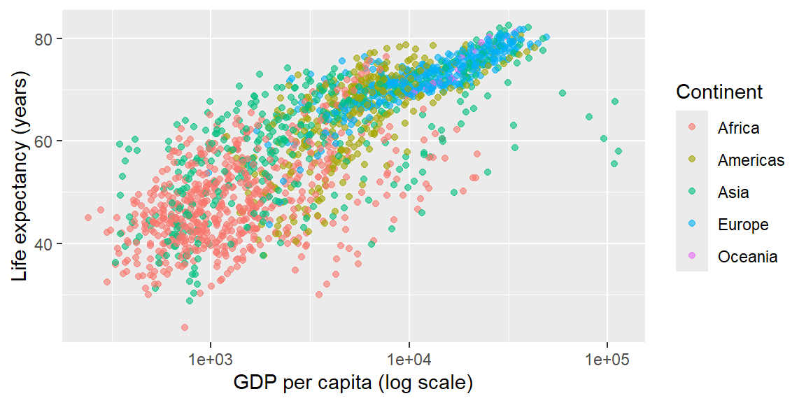

20 Session 20 – Reproducible research & communication
Objectives
- Appreciate the value of reproducible research. Understand why combining your code, its results and your prose in a single document improves transparency, facilitates collaboration and serves as a lab notebook. Recognize that Quarto integrates the lessons of the R Markdown ecosystem and is designed for analysts, collaborators and decision‑makers.
- Learn the basics of Quarto documents. Create and render a Quarto (
.qmd) file with a YAML header and interleaved code and narrative. Understand how to specify global settings in the YAML, supply metadata like title and date, and set the default output format. - Use chunk options effectively. Control evaluation, display of code, warnings and messages with chunk options (
eval:,include:,echo:,message:andwarning:). Set global chunk options and learn how inline code can report dynamic values inside your prose. - Generate multiple output formats. Configure Quarto to render the same document to HTML, PDF and Word and learn how to customize options like the table of contents or code‑folding in the YAML. Understand the difference between persistent settings in the YAML header and transient settings supplied to
quarto_render(). - Communicate your findings clearly. Apply principles from the communication chapter to turn exploratory graphics into expository graphics. Write titles that summarize the main finding rather than simply describing the plot; add subtitles and captions; label axes and legends with units and descriptive names; and use themes, annotations and layout to guide your audience.
Notes
Why reproducible research?
In an exploratory notebook it’s easy to lose track of which code produced which results. Reproducible research addresses this by knitting your analysis and narrative together so that anyone—including future you—can rerun the analysis and obtain the same outputs. This approach, sometimes called literate programming, intersperses code with human‑readable explanations. In the tidyverse, the Quarto system is the modern successor to R Markdown. A Quarto document is a plain text file with a .qmd extension that contains three elements:
- A YAML header delimited by triple dashes (
---) at the top of the file. Here you set metadata such as the document title, author, date and default output format. You can also set default execution options (e.g., hide code globally) in this header. - Narrative text written in Markdown. Use headings to structure your document, lists for bullets and paragraphs for explanations. You can insert inline R code by enclosing it in backticks preceded by
r(e.g., ``) to dynamically insert values into your prose. - Code chunks that contain R code. Each chunk begins with triple backticks and a language engine (e.g.,
{r}) and ends with triple backticks. You can assign a label and specify options immediately after the opening fences. When you render the document, Quarto executes each chunk in order and inserts the output.
This structure ensures that anyone with the data and the .qmd file can reproduce your results. Because Quarto is language‑agnostic, you can also include chunks written in Python or Julia alongside R code, but we will focus on R.
Quarto basics and YAML
The YAML header sets the global context for your document. A minimal Quarto file looks like this:
---
title: "Global life expectancy report"
author: "Your Name"
date: 2025-11-18
format: html
---The title and date appear at the top of the rendered document. The format specifies the default output; common values include html, pdf and docx. You can supply an expanded format: field to customize specific options or produce multiple outputs:
format:
html:
toc: true # include a table of contents
code-fold: true # make code blocks collapsible
pdf: default
docx: defaultWith this configuration Quarto will generate HTML, PDF and Word files when you render the document. If you render from RStudio the appropriate viewers open automatically. To render from the command line you can run quarto render my-document.qmd or use quarto::quarto_render() inside R; both commands support an output_format argument that overrides the YAML specification.
Code chunks and options
Code chunks are where your analysis happens. Each chunk can be given a label so that you can reference its output (e.g., #| label: setup). Chunk options control whether code is executed and how results appear. Here are the most commonly used options:
eval: falseprevents the code from running. Use this to display example code without executing it.include: falseruns the code but hides both the code and its results; this is useful for setup tasks like loading packages or reading data.echo: falsehides the code but shows the results. Use this when writing reports for people who care about the conclusions but not the implementation.message: falseandwarning: falsesuppress messages and warnings from appearing in the output.results: hidehides printed output;fig-show: hidehides plots.
You can set these options on a per‑chunk basis by adding #| option: value lines immediately below the chunk header. For example:
If many chunks share the same settings, set global chunk options in the YAML header under an execute field:
execute:
echo: false
message: false
warning: falseThis hides code and suppresses messages by default; you can override these defaults in individual chunks by explicitly setting echo: true or similar.
Rendering to multiple formats
Quarto can produce a variety of outputs beyond static HTML. In the YAML header you can specify multiple formats under the format: field. Each format can have its own options. For example, to add a floating table of contents to the HTML version while keeping the PDF and Word versions default:
format:
html:
toc: true
toc_float: true
pdf: default
docx: defaultWhen you render the document, Quarto will create three files: .html, .pdf and .docx. If you only want to render one format temporarily, supply the output_format argument to quarto_render(), e.g.,
quarto::quarto_render("my-report.qmd", output_format = "docx")Another useful option for HTML outputs is code-fold: true, which hides code by default but allows readers to expand it on demand. Remember that PDF output requires a LaTeX installation; RStudio will prompt you to install TinyTeX if you don’t have it.
Inline code and narrative
One of the strengths of literate programming is the ability to embed code directly within text. Inline code is enclosed in backticks preceded by r, like 1704. When the document is rendered, the expression is evaluated and its result inserted into your prose. This ensures that statements about your data remain accurate as your analysis evolves. To control the formatting of numbers you can define a helper function, such as:
Then you could write, “The gapminder dataset contains 1,704 observations across 12 years.”
Communicating your findings
Once your analysis is reproducible, you need to communicate it effectively. A good graphic tells a story. Start with labels: use labs() to add clear axis titles, legend titles, a main title that summarizes the key finding and an optional subtitle and caption. Avoid titles that merely restate the variables (“A scatterplot of GDP vs. life expectancy”) and instead summarize the insight (“Life expectancy increases with wealth, but Europe leads at every income level”). Use the subtitle for additional context and the caption to cite data sources or provide notes. When labelling axes and legends, replace short variable names with descriptive phrases and include units (e.g., “GDP per capita (USD)”). Thoughtful labels help your audience understand your plots without reading your code.
Beyond labels, consider annotations, scales and themes. Annotations (e.g., geom_text(), geom_label()) can highlight notable observations or annotate clusters. Adjust scales to control axis ticks, breaks and legends; the scales package provides functions like label_comma() for nicely formatted numbers. Themes control the non‑data elements of the plot: fonts, backgrounds and layout. The default theme_minimal() is a good starting point; use theme() to adjust specific elements such as the position of titles and captions. For multi‑plot layouts, packages like patchwork let you combine multiple ggplots and add common titles and captions.
Key take‑aways
- Combine code and narrative. Use Quarto to weave your code and prose together so that anyone can reproduce your results and understand your reasoning.
- Structure your document with YAML. The YAML header sets the title, date and output formats and can contain default execution options. Expand the
format:field to customise each output and render to multiple formats. - Master chunk options. Use options like
eval,include,echo,messageandwarningto control what is executed and displayed. Set global defaults in the YAML and override them locally when necessary. - Use inline code for dynamic text. Insert the results of R expressions into your prose with inline code and define helper functions to format numbers cleanly.
- Communicate clearly. Titles should summarize the main insight; subtitles and captions provide context and sources; axis labels and legends should be descriptive and include units. Use annotations, scales and themes to guide your audience’s attention and craft expository graphics.